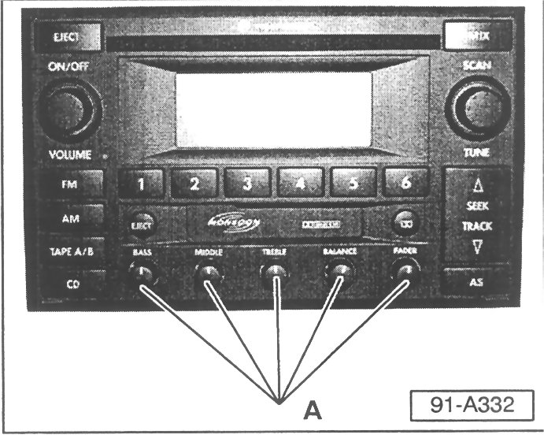

Audio System - Radio Knobs Loose/Broken
Group: 91Number: 03-02
Date: Dec. 2, 2003
Subject:
Radio, Tone, Balance or Fader Knobs Broken or Loose
Model(s):
All with Panasonic Premium 2002 --> 2004
VI Radio
Condition
Panasonic Premium VI (Radio/CD/Cassette Player) tone/balance/fader knobs broken or loose.
Service

- Replace ALL five knobs -A- with 5 knobs from kit Part No: ZVW 828 002A.
- Discard knobs removed from radio.
Note:
To prevent repeat repair to a different knob at a later date. It is important to install ALL 5 knobs from the kit